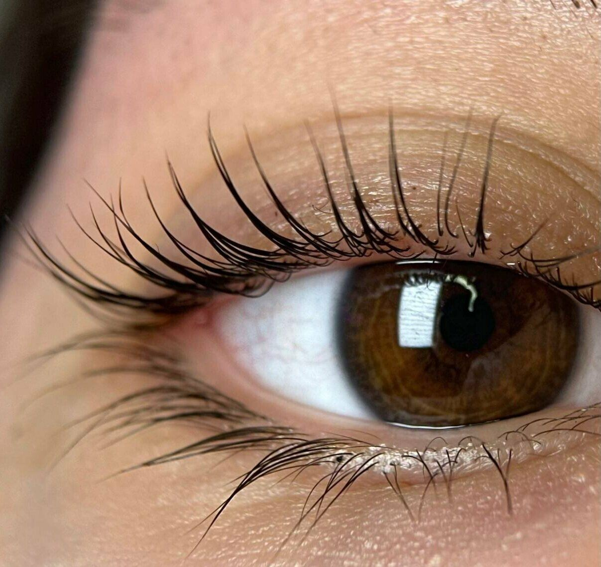

Студия бровей и ресниц
Ламинирование ресниц и оформление бровей на Социалистической, 21 — в 720 м от м. Лиговский проспект.
или позвоните: +7 (927) 694-75-42О салоне
Студия бровей и ресниц на Социалистической улице, 21. Мастер подробно рассказывает о процедуре, материалах и уходе, а после визита можно написать и спросить, что делать с бровями дома.
Из отзывов
Эффект ламинирования держится отлично
Рассказывают о процессе, материалах и уходе
Время на процедуре пролетает незаметно
Отзывы
Не первый раз прихожу на ламинирование ресниц — эффект держится отлично. За приятной беседой время на процедуре пролетает незаметно, а потом открываешь глаза и радуешься результату.
Уже год хожу сюда на ресницы. За все процедуры никаких последствий, результат каждый раз выше ожиданий. Мастер подробно рассказывает о процессе, материалах и уходе.
Два года доверяю мастеру брови и ресницы — она понимает запрос почти без слов. Можно написать и спросить, что сделать с бровями дома. Благодаря ей отрастила длинные здоровые ресницы.
Атмосфера
Контакты
Запись
Позвоните или напишите во ВКонтакте — подберём удобное время.
+7 (927) 694-75-42